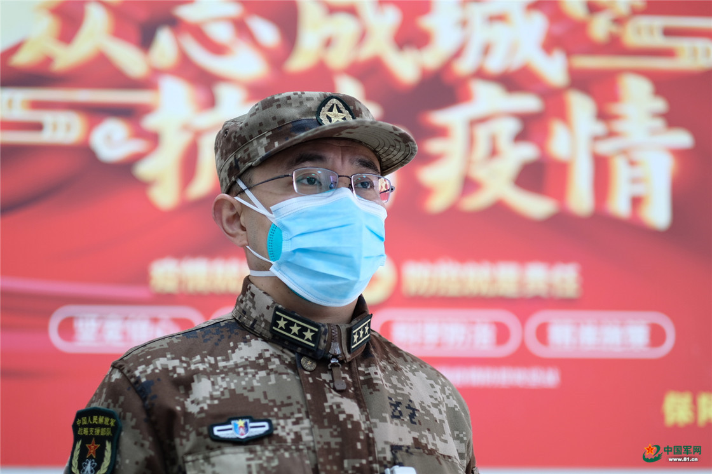
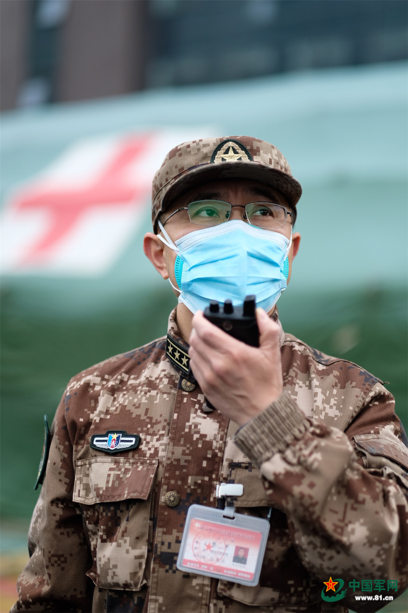
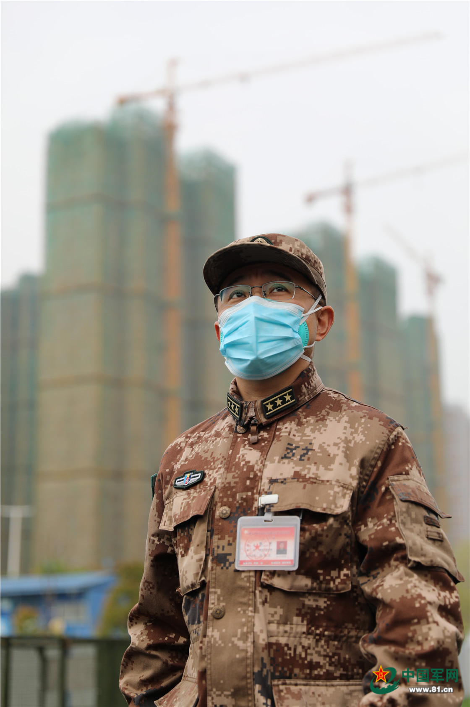

一线抗疫群英谱｜张军：患者性命相托，我们必当全力以赴
来源：中国军网 作者：韩阜业 朱霄雄 发布：2020-04-02 17:00:04
3月21日傍晚，荆楚大地春雷滚滚，湖北省妇幼保健院光谷院区出院处热闹非凡。
接诊中心主任张军正在为出院的康复者们进行洗消。“感谢你们，武汉的春雷在为你们鼓掌！”一位康复者深情地对张军说。
“患者性命相托，我们必当全力以赴。”张军告诉记者，“如果把救治患者比喻成一场接力赛，那么我们接诊中心就是第一棒，必须拼尽全力跑出优势。”

第一责任：冲锋在前，义无反顾
乍一听“接诊中心”这四个字，人们想到的大多是为患者引导指路、登记信息，一片欢乐祥和，但在张军眼里，接诊中心的工作意味着更高标准、更重责任和更大工作量。他和另外7名战友，要在患者出入院“不定时间、不定数量”的前提下，统筹好送餐、洗消、出入院等各项工作，全天候应对瞬息万变的“战况”。
“接诊中心是没有下班这个概念的。”采访中，张军身边的一部对讲机总是有声音传出，这就意味着“红区”的战友们还在接送患者。
尽管接诊中心人员不多，但张军的要求非常严格，每天一上班，他都要雷打不动地进行一次点名。“点名，对于军人来说，更像是一场战前动员。”张军一直这么认为。
2月19日，光谷院区第一天接收患者，医院从上到下都进入战时状态。
“60名患者马上进医院，请接诊中心做好准备。”对讲机里传来命令。张军带着队伍一字排开站在医院患者通道，依次点名后一字一顿地大声说：“养兵千日，用兵一时。祖国和人民考验我们的时候到了，大家跟紧我，准备快速接诊。”
“必须要快！”张军要求大家的脚步尽可能地加大加快，因为这是一场赛跑，患者越早到达科室，就越多一份生的希望。
一位70多岁的老人在班车上无法动弹，也无法言语，满头是汗。“来不及了，必须马上送科室抢救。”他一把将老人抱下车，立刻送往科室救治。长期从事内科工作的张军，有着丰富的临床经验，他知道这种状态下老人非常危险，如果再按流程登记绝对挺不过去。
有时只是快还不够，患者病情复杂，只有把他们的信息掌握准才能合理分配科室。患者能够说清楚还好，遇到一些沟通不畅甚至是患有失语症的患者，接诊中心的战友们往往要在沟通过程中花上几个小时。“最多我们一天接收了217个病人。”张军很自豪地说，8个人从头天早上一直干到第二天凌晨，衣服不知道湿了多少遍。
“看到一名名患者得到及时科学的治疗，看到一名名患者康复出院，我们觉得一切努力都值得。”张军说道。

第一战场：当好桥梁，凝心聚力
有人说，接诊中心的工作就像是战场上的“桥头堡”，只有坚守住了接诊中心这个“据点”，医院各个科室才能游刃有余地开展诊治工作。“接诊跟打仗也不完全一样。”张军认为，战友们阻挡住的不是敌人，而是混乱的秩序；坚守阵地靠的也不是武器，而是一颗热心肠。
如果说接诊中心把病人顺利送往科室是架起了患者与医生之间的生命桥梁，那么在疫情期间，接诊中心还需要架起一座患者与家属之间的亲情桥梁。“家属无法进入红区，但病人如果有其他需求怎么办？”张军自问自答：“我们每天往来于医院门口与各个科室之间，承担这份传递东西的工作理所应当。”
“我们传递的不仅是一件件具体的物品，而是一份份鼓励和支持。”尽管每天来回接送病人已经是超负荷运转，张军仍然鼓励大家尽全力去帮助患者和家属。“每一位患者都有亲属，一定非常担心。”张军主动把电话留给送来患者的工作人员，还嘱咐他们一定要告诉患者亲属，可以随时打来电话。也正是为此，张军的手机每天都要接100多个电话。有时张军在“红区”工作，无法使用手机，回到“绿区”他会认真地对每一个未接来电进行回拨。“这些电话对于患者来说很重要。”张军不仅在电话里告知亲属现在患者的具体情况和新的联系方式，还主动询问是否能够帮忙做些什么，令患者亲属们感动不已。
患者家属理解还好说，最怕的就是他们不理解。一次，一位70多岁全身瘫痪的老爷爷，确诊新冠肺炎被送到光谷院区。他的老伴60多岁，并未确诊。老奶奶在一旁苦苦哀求，说自己照顾患者6年多了，经验丰富，希望能进院陪床。“健康人一旦进入红区，就有被感染的风险。”张军在一旁给老奶奶反复解释，还把她照顾患者的经验做法一一记录在本子上。“我们一定会把大爷照顾好，您尽管放心。”经过他们的耐心解释，老奶奶终于同意离开。
张军说：“医者尽心、患者安心、家属放心，我们战胜疫情才更有信心。”

第一心愿：武汉不胜，我们不退
除了每天接送100名左右患者，接诊中心还要配送光谷院区800多名患者的一日三餐，平均每人每天要运送近千斤的食品。“算上我，接诊中心只有两名男同志，大家真的很辛苦。”提起送餐任务，张军就忍不住为战友们点赞。
刚开始，送餐这项工作不属于接诊中心，而是由医院保障部来负责。“但是保障部的工作人员不是三级防护，只能把饭送到‘绿区’，需要由‘绿区’的医护人员再送往‘红区’。”张军说，接诊中心的工作人员可以直接把饭菜送到患者手中，更加快捷，可以让患者们吃到更热乎的饭菜。“尽管很辛苦，但大家都无怨无悔。”张军对此非常欣慰。大伙儿说：“国家需要我们干多久，我们就干多久。一直干，干到完全胜利。”
近期，随着全国疫情形势整体向好，接诊中心的工作量也在慢慢减轻，但张军和战友们却没有放松，开始到处“找事干”。
护士徐珊得知感染二科的重症病房缺人手，就主动提出去感染二科帮忙。
护士宋洁有心理咨询师资格证，报名参加了光谷院区的心理服务工作组，为患者和医务人员开展心理服务。
医生朱学海擅长针灸，看到有医务人员肩颈不舒服，就主动帮着扎针缓解疼痛。
……
“我现在觉得抗疫不仅是一场接力赛。接力赛中，第一棒跑完就算结束了，而对于我们来说，这更像是一场拔河比赛，只有取得完全胜利才是结束。”张军说。